XPR：可扩展跨平台点式可微渲染器XPR: An Extensible Cross-Platform Point-Based Differentiable Renderer
作为点式地图和 3DGS-SLAM 表示的实验基础设施有潜力；实际价值取决于性能、在线更新支持和开源成熟度。
一句话工作总结
XPR 用高层接口和 XLA 编译降低点式可微渲染实现门槛，可快速实现 3DGS/3DGUT/LinPrim 等方法。
摘要
点式可微渲染支撑现代三维重建、新视角合成和学习式图形 pipeline，但开发新渲染方法通常需要大量底层实现、硬件相关 kernel 和手写反向传播，限制了快速原型、复现、探索和部署。本文提出 XPR，一个可扩展、跨平台的点式可微渲染框架。XPR 提供高层编程接口，将方法特定逻辑与共享渲染 pipeline 分离，使用户能用少量代码实现新方法。它把渲染 pipeline 分解为模块化、静态 shape 的并行操作，可通过跨平台编译器 lowered 到 GPU、TPU、CPU 和其他 ML 加速器。作者展示了 3DGS、3DGUT 和 LinPrim 的实现，每个只需数百行 Python，并可通过 XLA 编译到多种硬件平台。
Point-based differentiable rendering underpins modern 3D reconstruction, novel-view synthesis, and learning-based graphics pipelines, but developing new rendering methods often requires extensive low-level implementation, hardware-specific kernels, and manually written backward passes. This limits rapid prototyping, reproducibility, exploration, and deployment, especially across diverse hardware platforms. This paper presents XPR, an extensible cross-platform framework for point-based differentiable rendering. XPR introduces a high-level programming interface that separates method-specific logic from the shared rendering pipeline, allowing users to implement new methods in a few lines of code. Its pipeline decomposes rendering into modular, statically shaped parallel operations that can be lowered by a cross-platform compiler to GPUs, TPUs, CPUs, and other ML accelerators. We demonstrate implementations of 3DGS, 3DGUT, and LinPrim, with only a few 100s lines of Python code, each of which can be compiled to a range of hardware platforms with the XLA compiler. These results show that XPR enables fast experimentation and portable execution for emerging point-based differentiable rendering systems.
中文解读摘录
- 作者：Matthew Cong, Francis Williams, Jonathan Swartz, Mark Harris, Sanja Fidler, Ken Museth；类别：cs.CV / cs.DC / cs.GR / cs.LG；发布日期：2026-06-10；备注：14 pages, 6 tables, 2 figures；采集 score=13
- 核心问题：3DGS 在真实大场景重建中受单 GPU 显存与算力限制，难以扩大到城市级、街景级细节，同时多卡分布式实现通常要求模型代码显式处理跨设备通信。
- 方法亮点：提出一个 PyTorch backend，把 Gaussian 参数和 splatting operators 通过 CUDA unified memory 与 NVLink 分布到多 GPU；分布发生在 operator 层，模型代码可把多张 GPU 视作聚合 PyTorch device，不需要手写跨设备通信。
- 结果信号：展示了包含 超过 10 亿 Gaussian splats 的城市级重建，数量超过当前 SOTA 25 倍以上，并保持街景级细节。
- 关注价值：这更像 3DGS 系统/基础设施论文，不是 SLAM 算法；但对大尺度机器人地图、城市数字孪生和长序列 Nerfstudio/3DGS 重建非常关键。后续应关注显存分页、NVLink 依赖、训练/渲染吞吐，以及是否能接入已有 COLMAP/SLAM 位姿和地图分块流程。
图表/页面预览
{kind=link}
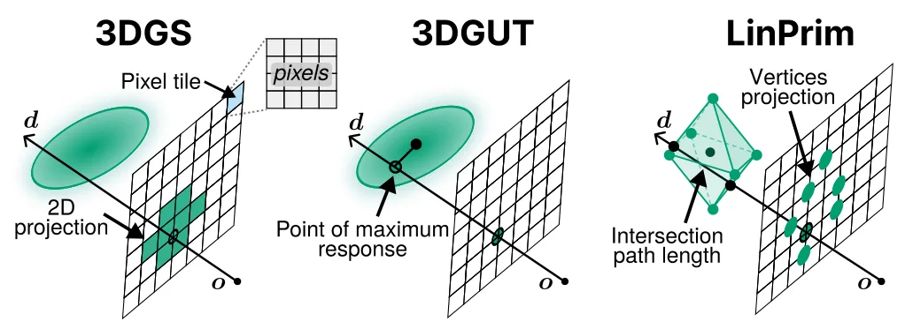
{kind=link}
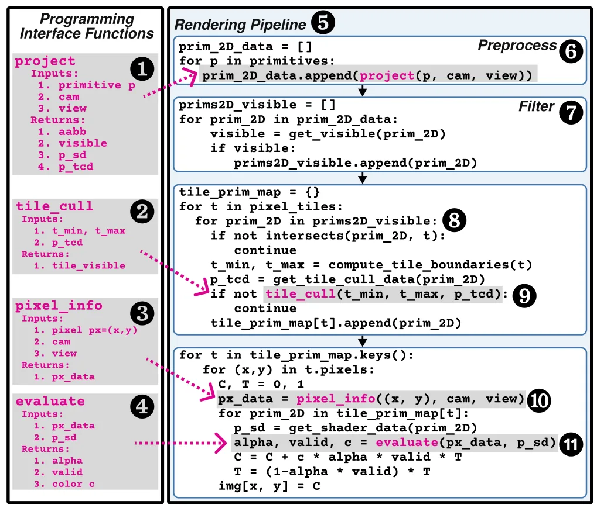
{kind=link}
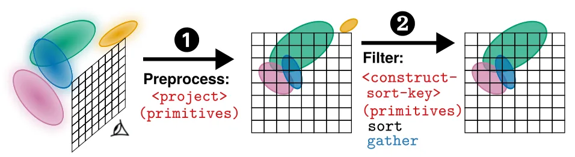
{kind=link}
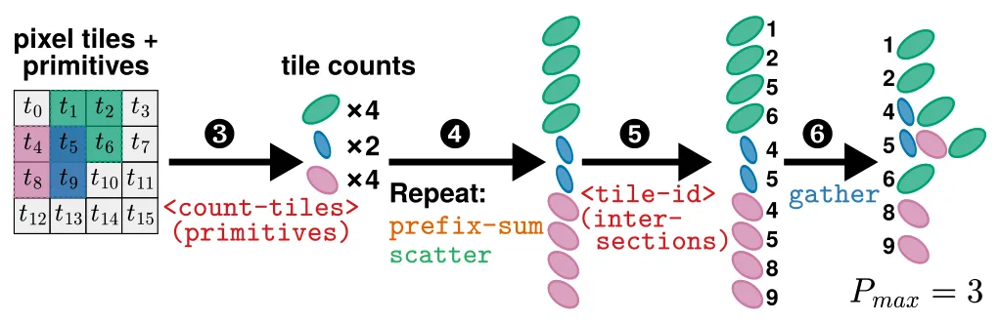
{kind=link}
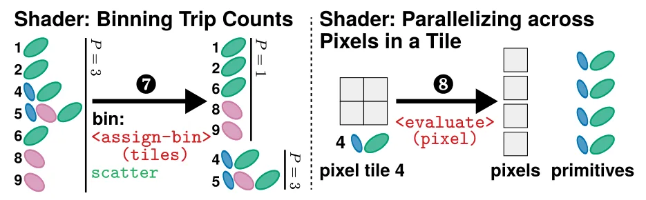
{kind=link}
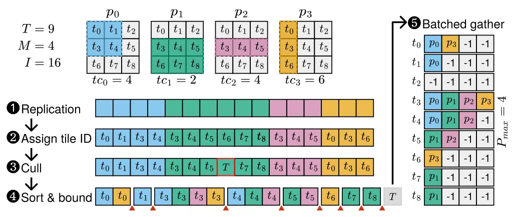
{kind=link}
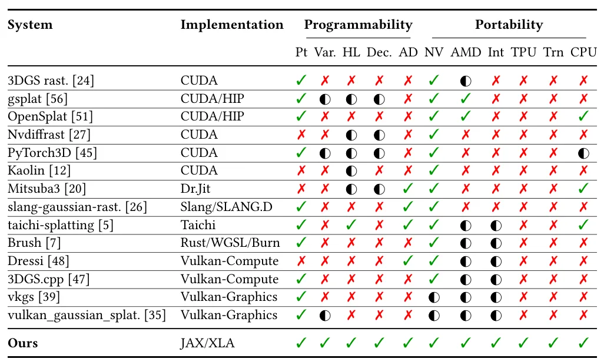
{kind=link}
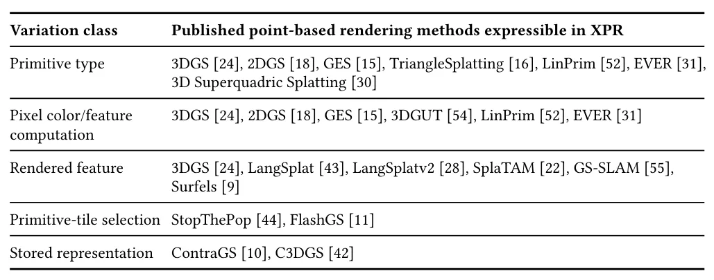
{kind=link}
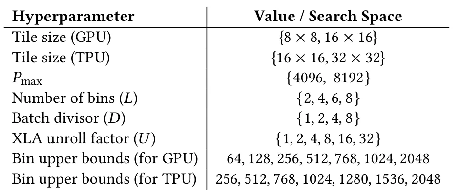
{kind=link}
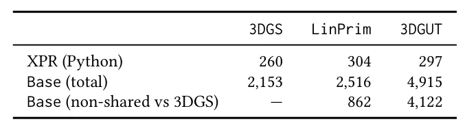
{kind=link}
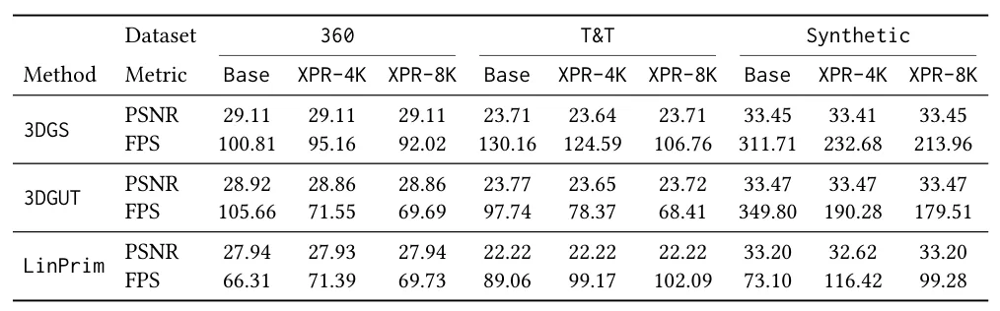
{kind=link}
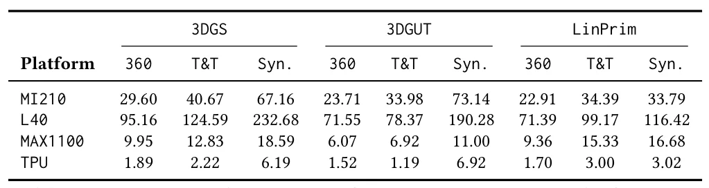